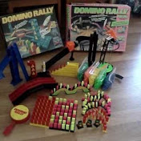
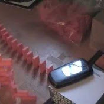
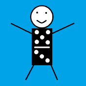
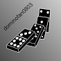
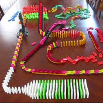
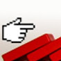
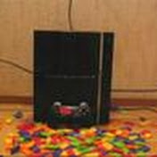
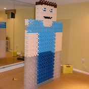
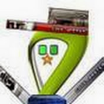

BEFORE TheDominoSwag Jin
On October 27, 2007, I joined my first YouTube channel called 'jjm9512' for the first time. I have enjoyed watching a bunch of toppling domino videos. FlippyCat, dominofan0803, Hevesh5, etc., were my inspirations for thinking to create my domino videos. So I began to upload my domino videos for the first time in May 2009 and started the classic domino series first afterward. As a result, I had very few subscribers milestones back then.
Most Memorable YouTube Domino Main Channels I Have Watched During 'jjm9512' Era
        DURING TheDominoSwag Jin
I changed my initial YouTube channel name to 'TheDominoSwagJin' in December 2012. I still like my current YouTube channel name.
Around late 2014, I was running out of domino ideas. After watching FlippyCat's video, 'Spectacular Domino Rally Stunt Screen Link,' I was able to invent something unique; therefore, I have expanded types of modern domino series beginning in early 2015.
THE MOST POPULAR VIDEO AS OF NOW
I did not expect to see tremendous views of this video after completing approximately five months of effort.
I unbelievably reached 1,000 subscribers as a significant milestone on my current YouTube channel after 10 YEARS.